The Sixteen‑Bit Gazette
New products
Utilities · page 42
GS Commander
Two panes, ten keys, and every file on your IIgs. The two-pane file manager from the PC world comes to GS/OS, and it brings a look inside nearly everything.
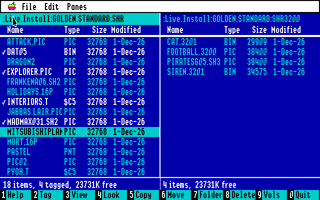
Anyone who has used a PC this year knows the picture: two blue panels side by side, a highlight bar, and a row of numbered keys along the bottom of the screen. GS Commander brings that way of working to the Apple IIgs. One pane shows one folder, the other pane another; you copy, move and delete from the active pane to the other one, and you never have to drag a window out of the way to do it.
It runs on the GS/OS desktop in 640 mode, so the menus, the mouse and the IIgs fonts are all there. But everything can be done from the keyboard: the arrow keys move the bar, Tab goes to the other pane, Return opens a folder, and Delete goes back up. Typing a letter jumps to the next name that starts with it.
Ten keys
The number keys do the work, and the key bar can be clicked too. Copy, Move and Delete act on the tagged items, or on the one under the bar when nothing is tagged. Folders go with everything in them, and files keep their type, aux type, dates and resource forks. Escape stops a long copy between files.
Quick reference
| 2 | Tag or untag |
| 3 | View a file a page at a time |
| Space | Quick Look |
| 5 6 | Copy, Move or Rename |
| 7 8 | New folder, Delete |
| + - * | Tag matching, untag matching, invert |
| K | Duplicate |
| F | Find |
| I | Info pane |
| P | Compare panes |
Move or Rename asks for a name or a path: a plain name renames, a path starting with a colon moves. Compare Panes tags the files that are only in one pane, or in both with another size or date.
The mouse, too
A click puts the bar on an item and a double click opens it. Apple-click tags an item, Shift-click tags a whole range. Press on an item and drag it onto the other pane, or onto a folder in either pane, and it is copied there at once. Hold Option and it is moved instead.
Look before you leap
Press Space and Quick Look tells you what the item is (its kind, size, dates and access) and shows what is in it: text, a listing, the names in a folder, or the picture itself. The arrow keys move on to the next file with Quick Look still open, so you can leaf through a disk of unknown files in a minute.
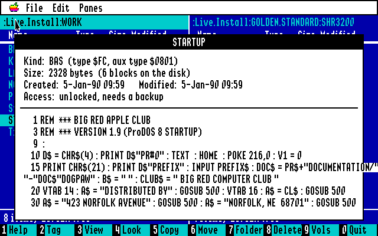
It knows 448 kinds of files by their type and aux type, from CiderPress II's table and the a2infinitum list. BASIC programs come out as listings (Applesoft, Integer and Business BASIC), Merlin and S-C assembler source in columns, and program files as their segments, with the code disassembled as 65816 or 6502 and the Toolbox, GS/OS and ProDOS calls named.
The picture show
Every Super Hi-Res format, and pictures from other computers too.
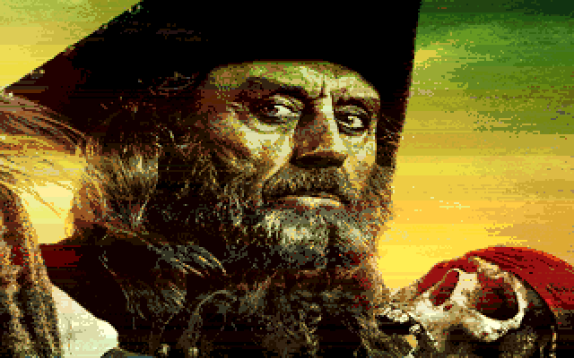
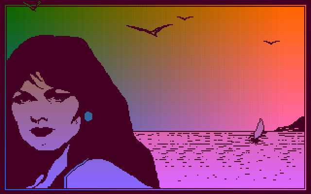
View (3) and Quick Look show pictures on the whole screen until a key is pressed, in every format MegaconvertGS can load, because its loaders are built in. On the Apple side: HiRes, Double HiRes and LoRes; Super Hi-Res as $C1 screens, packed, Apple Preferred, PaintWorks, DreamGrafix and 3200 colours.
From other computers: Atari ST, Amiga IFF, Commodore 64, MacPaint and PICT, PC BMP, PCX and IMG, TIFF, PNG, GIF, JPEG and more. True colour pictures are remapped to 16 colours and fitted to the screen. In Quick Look the arrow keys go on to the next picture, a slide show of your disk.
Big pictures take a while: a MacPaint page or a large JPEG can need half a minute on a stock IIgs. Fonts, Finder icons and HiRes fonts are drawn too.
Sound you can see
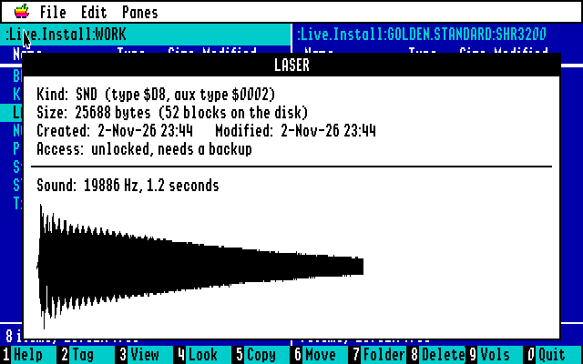
Sounds play in Quick Look at once, on the IIgs' own Ensoniq chip: sampled sounds, rSoundSample resources, HyperStudio and Sound Shop sounds, ASIF instruments, and Audio IFF. A big sound starts at once and loads while it plays.
SoundSmith songs (and NoiseTracker GS's) play too, the way SoundSmith's own player plays them: fourteen tracks, with their instruments taken from the wave bank next to the song or from the ASIF files it names.
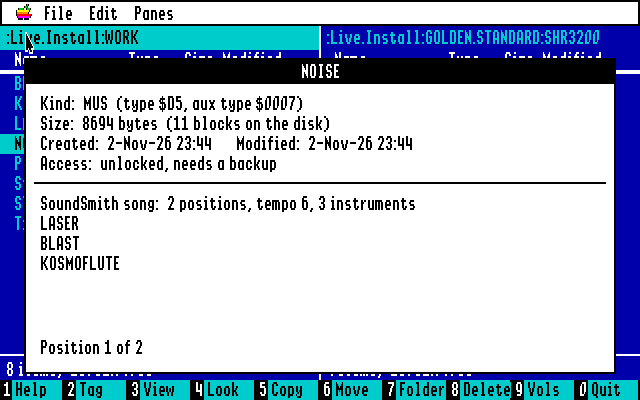
The documents
Word processor files show their text: AppleWorks and AppleWorks GS, Teach, MultiScribe and BeagleWrite (also their GS versions), and GraphicWriter 1.x and III, with long paragraphs wrapped to the window. AppleWorks data bases and spreadsheets, Apple Pascal files and random-access text come out readable too. H shows any file in hex instead.
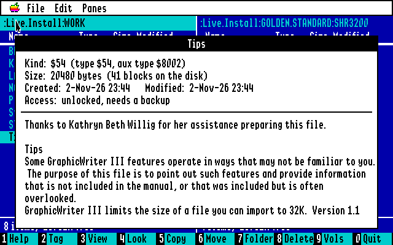
Archives open like folders
Press Return on a disk image or an archive and you are inside it, as if it were a folder. Delete steps back out. GS Commander knows them by what is in them, not by their names.
- Disk images: .PO, .HDV, .2MG, .DSK and .DO with a ProDOS volume
- DOS 3.3 disks, their files given ProDOS types
- ShrinkIt archives (.SHK, .BXY, .SDK), compressed or stored, with folders and resource forks
- Binary II (.BNY) and ZIP archives
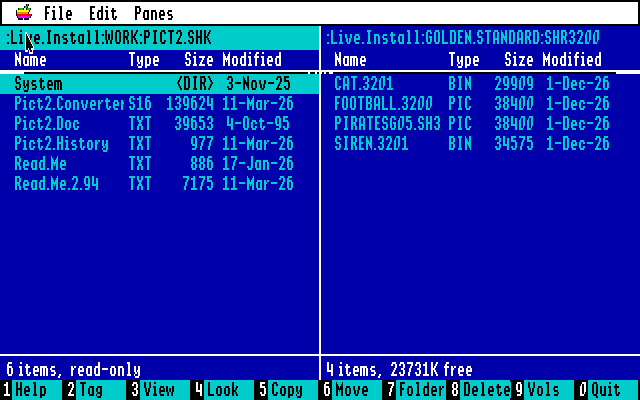
Inside, Quick Look and View work as anywhere else, and names ProDOS does not allow are made legal on the way out.
Finding things
Apple-F finds files and folders whose names match a pattern (* for any characters, ? for one) in the active folder and every folder in it. The results stay in the pane, each with its path, and you can copy, delete, view and tag them right there.
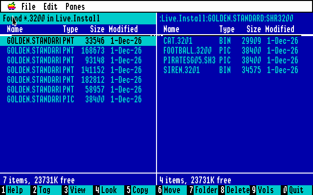
All about a file
Apple-I turns the other pane into an Info pane that follows the bar: what kind of file it is, its type and aux type, both forks' sizes, blocks, storage, dates and access. Tab into it to change the type, the aux type, or to lock a file or make it invisible.
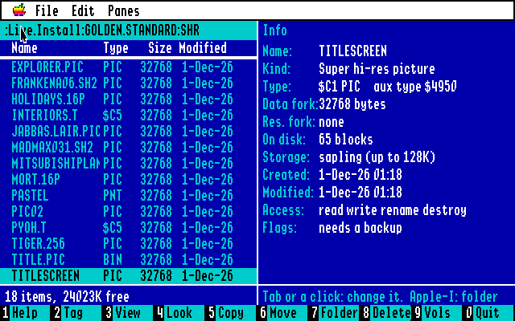
Apple-K duplicates, Apple-J adds up the size of folders, and the menus add Same Folder in Both Panes, Swap Panes and Show Invisible Files.
In the box
As it would have stood on the dealer’s shelf.

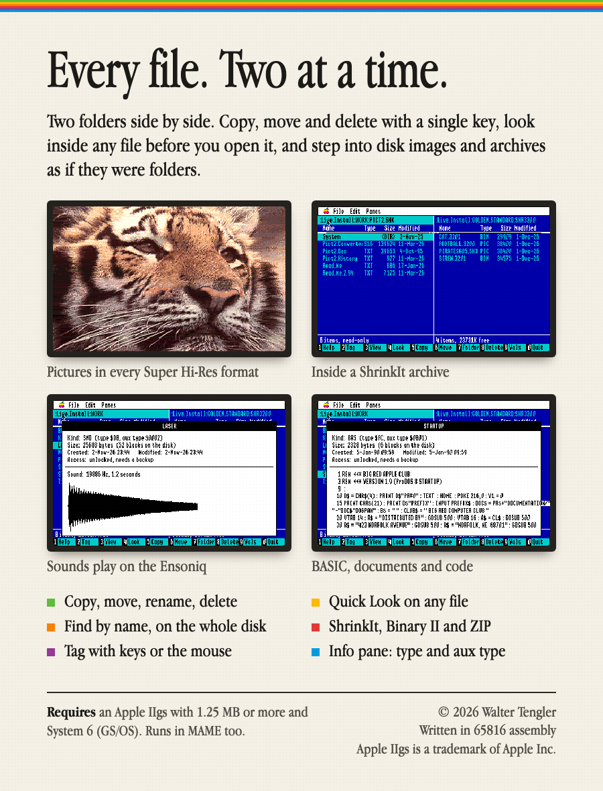
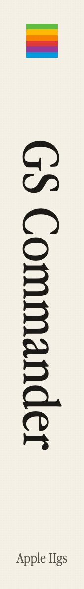
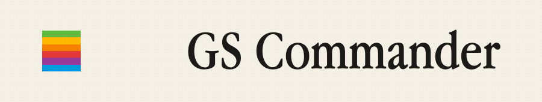
Software came in a box then: a disk, a manual and a promise on the cover. GS Commander’s would have looked like this, set in Apple Garamond like the IIgs’s own software, with a monitor on the front and the screens on the back.
What you get is the same as what is on the box: one 3.5-inch disk image with the program, its ReadMe and its Finder icon. The box itself you will have to imagine.
Yes! I want GS Commander.
No check, no money order, no stamp. GS Commander is free and its source is open. Download it, copy it to your System 6 disk, and double-click.
Index
More software by Walter Tengler. All of it on one page →
Apple IIgs
Mac utilities & creative
Portugal
Europe & global
Utilities & planning
Games
This page is dressed as 1986, the year of the Apple IIgs and of Norton Commander. GS Commander itself was written in 2026. File kinds from CiderPress II (Apache License 2.0, © faddenSoft) and the a2infinitum apple2-filetypes list (MIT). Shaston font: see fonts/ShastonLicense.txt.